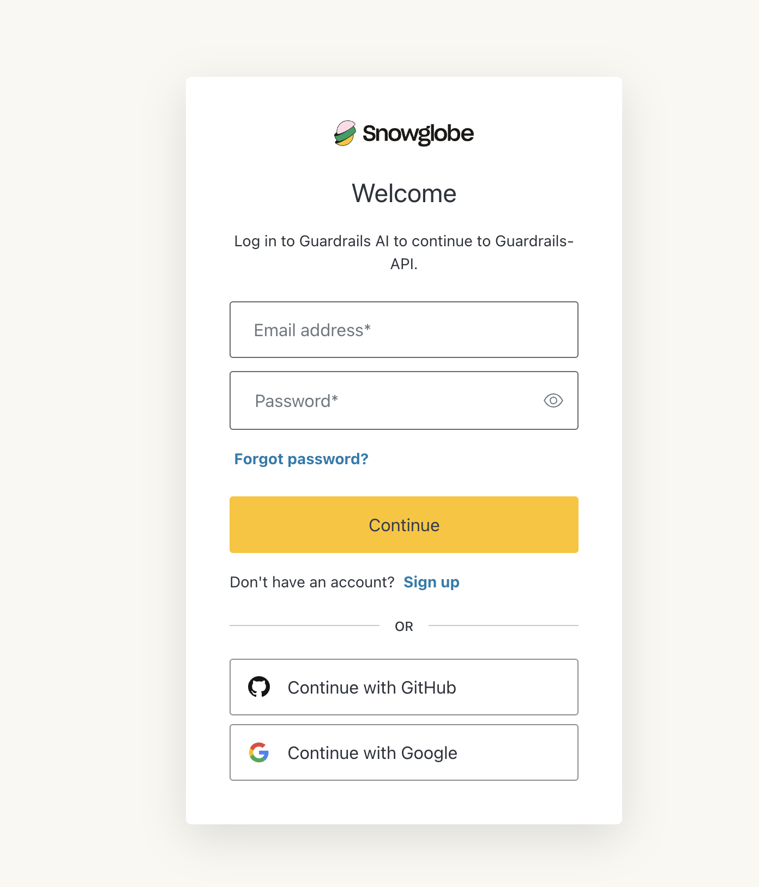
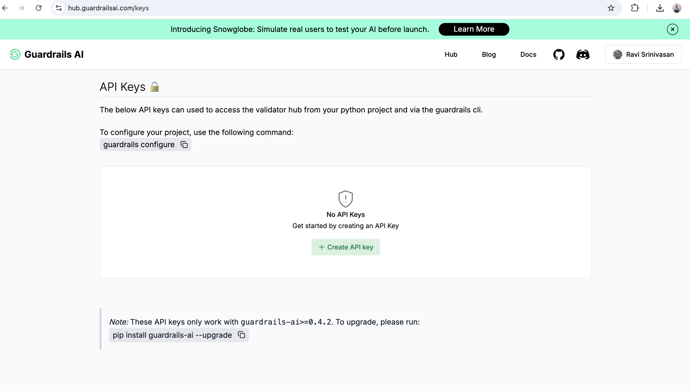
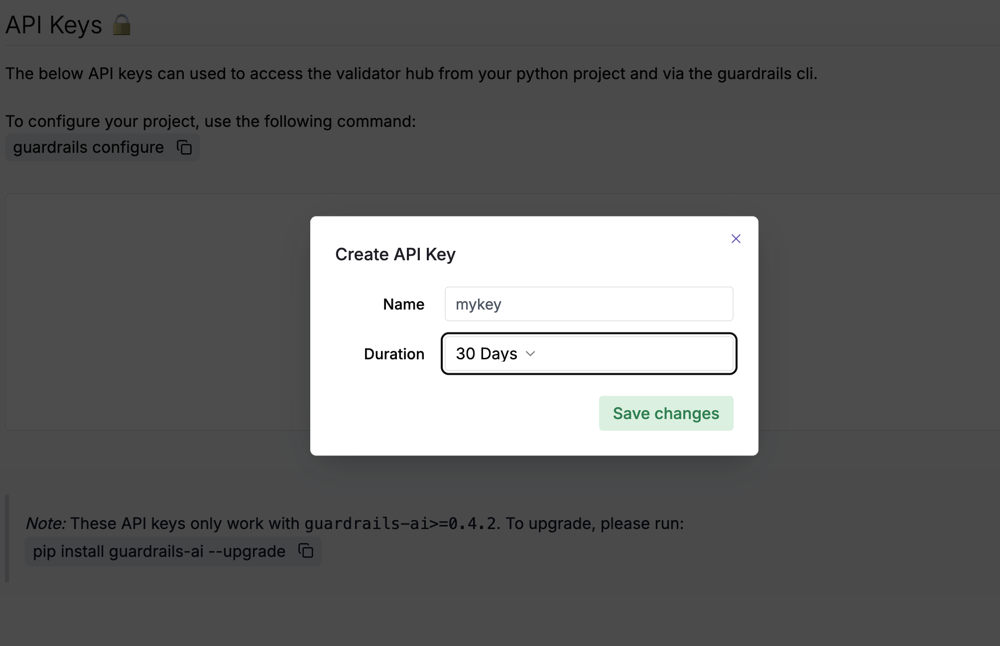
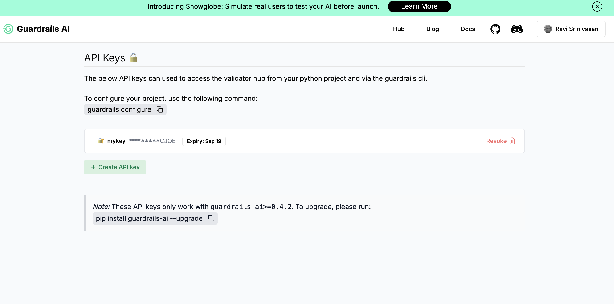
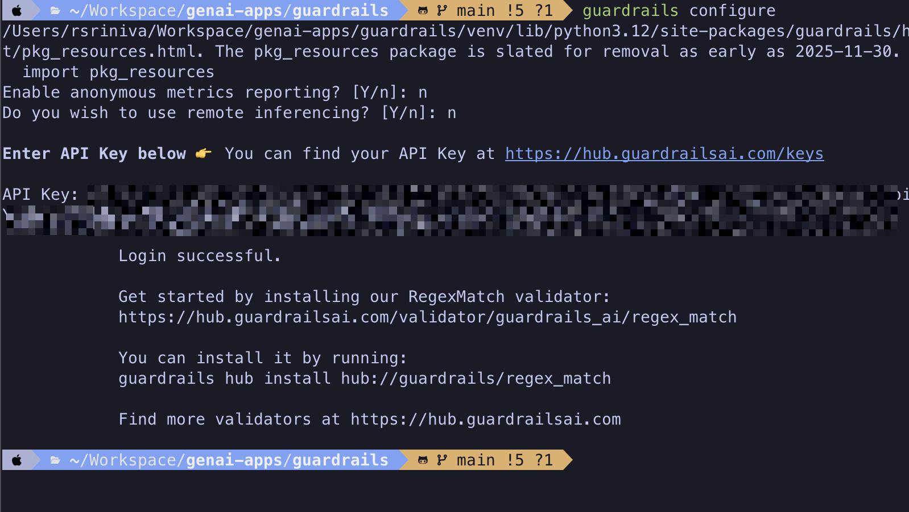

Lab: Adding a Simple Guardrail to an AI Application
In this lab, you will use add a simple guardrail to an AI application that accepts input from the user, and checks if it contains any Personal Identifiable Information (PII) in the input.
| We do not run any inference LLM model in this lab, and we restrict ourselves to the core Guardrails functionality of checking inputs. |
Pre-requistes
-
Python v3.12 (The labs in this course were tested with Python 3.12 on macOS. Note that Python >3.12 is not supported for now)
-
The
pipCLI to install Python libraries -
Git CLI to clone the sample code from GitHub
-
Visual Studio Code or other editors to edit Python code
-
You need to create an account for Guardrails AI Hub (https://hub.guardrailsai.com). Do the following
-
Using a web browser, navigate to https://hub.guardrailsai.com/keys
-
Click on the
Sign in to get startedbutton -
Create a new account, or sign in using your GitHub or Google credentials
Figure 1. Sign in to Guardrails AI Hub -
After you log in, click on
Create API keybuttonFigure 2. API keys page -
In the pop-up dialog for creating keys, give a unique name for your key and select the duration you want the keys to be active.
Figure 3. Create API key -
Copy the API key text to your clipboard and keep it safe. You will use this API key in all the hands-on lab exercises
Figure 4. Newly created API key
-
Steps
-
If you have not already done it, clone the Git repository containing the code to a folder of your choice.
$ git clone https://github.com/RedHatQuickCourses/genai-apps.git -
All the code for Guardrails AI is in a folder called
guardrails/guardrails-ai. Change to this folder in the terminal.$ cd genai-apps/guardrails/guardrails-ai -
Create a virtual environment and activate it.
$ python -m venv venv $ source venv/bin/activateYour prompt should change to indicate that you are now running in an isolated virtual environment.
-
Install the Guardrails AI library using
pip. This will install both the library files and theguardrailsCLI tool, which you will use to configure access using the API key you created earlier, as well as download validators from the Guardrails AI Hub.$ (venv) pip install guardrails-ai -
Run the
guardrails configurecommand to set up access to Guardrails AI Hub$ (venv) guardrails configureYou will be asked two questions. Answer No to both questions. Finally, paste your API key.
Figure 5. guardrails CLI configurationThe guardrails CLI will create a
~/.guardrailsrcfile in your home directory and store the API ID, API token, and other configuration details. -
Install the
termcolorlibrary usingpip.$ (venv) pip install termcolor -
Inspect the
gai-basic.pyfile in a text editor of your choice. We start off by importing theinstallclass from theguardrails-ailibrary. It is used to install validators from the Guardrails AI Hub. In this case, we import theDetectPIIvalidator.... # Import the install class from guardrails-ai library from guardrails import install # Install the DetectPII validator install( "hub://guardrails/detect_pii", (1) install_local_models=True, (2) quiet=False (3) ) ...1 The validator ID for the DetectPII validator on Guardrails AI Hub 2 Some validators use small, customized models for validation. These can be stored locally. 3 Silence warnings during install -
Create a
Guardobject and use theDetectPIIvalidator.... # Import Guard and Validator from guardrails.hub import DetectPII (1) from guardrails import Guard from termcolor import colored, cprint # Setup Guard guard = Guard().use( (2) DetectPII, ["EMAIL_ADDRESS", "PHONE_NUMBER", "US_SSN"], "exception" (3) ) ...1 Import the Validator 2 Create a Guardobject using the validator3 The DetectPIIvalidator takes two arguments - a list ofentities(email IDs, phone numbers, SSN, Passport numbers, and more) that should be checked in the input as an argument, along with the action it needs to take if it detects these entities in the input. In this case we simply throw an exception.Consult the DetectPIIvalidator documentation at https://hub.guardrailsai.com/validator/guardrails/detect_pii. The list of supported entities is available at https://microsoft.github.io/presidio/supported_entities/ -
The
main()method has a number of method calls with all except the first call commented out.... if __name__ == "__main__": valid_response() #invalid_response1() #invalid_response2() #invalid_response3() -
Run the script to test with valid input. The text we are validating is in the
valid_response()method.$ (venv) python gai-basic.py Installing hub://guardrails/detect_pii... [=== ] Running post-install setup ... Successfully installed guardrails/detect_pii version 0.0.5! Import validator: from guardrails.hub import DetectPII Get more info: https://hub.guardrailsai.com/validator/guardrails/detect_pii valid_response(): Response from LLM is valid...Since there are no visible PII in the input text, the validator allows this text to be processed further in our AI application.
-
Next, inspect the
invalid_response1(),invalid_response2(), andinvalid_response3()methods. We are checking for Email IDs, SSNs, and phone numbers in these methods respectively.... def invalid_response1(): try: guard.validate( "Hi John Doe! Can you please verify your email ID john.doe@example.com" ) except Exception as e: msg = str(e) print(colored('\ninvalid_response1(): Response from LLM is invalid\n', 'red')) print(colored(f"{msg}", 'red', attrs=['bold'])) def invalid_response2(): try: guard.validate( "Hi John Doe! Can you please verify your if your social security number is 615-49-2540" ) except Exception as e: msg = str(e) print(colored('\ninvalid_response2(): Response from LLM is invalid\n', 'red')) cprint(f"{msg}", 'red', attrs=['bold']) def invalid_response3(): try: guard.validate( "You can contact John Doe at +1 408-447-4433" ) except Exception as e: msg = str(e) print(colored('\ninvalid_response3(): Response from LLM is invalid\n', 'red')) cprint(f"{msg}", 'red', attrs=['bold']) ... -
Finally, uncomment all the method calls in the
main()method... if __name__ == "__main__": valid_response() invalid_response1() invalid_response2() invalid_response3() ... -
Run the script once again.
$ (venv) python gai-basic.py ... valid_response(): Response from LLM is valid... invalid_response1(): Response from LLM is invalid Validation failed for field with errors: The following text in your response contains PII: Hi John Doe! Can you please verify your email ID john.doe@example.com invalid_response2(): Response from LLM is invalid Validation failed for field with errors: The following text in your response contains PII: Hi John Doe! Can you please verify your if your social security number is 615-49-2540 invalid_response3(): Response from LLM is invalid Validation failed for field with errors: The following text in your response contains PII: You can contact John Doe at +1 408-447-4433The validator has correctly identified that the text in these method calls have PII in them, and thows an exception. We catch these exceptions and display the validator error messages in red font.
-
Experiment with more input texts and verify that the validator rejects them. A sample test is commented out in the script at the bottom. Refer to the supported entities page at https://microsoft.github.io/presidio/supported_entities/ and try and use a few. Try validating with different input texts and see if you can trigger false positives.